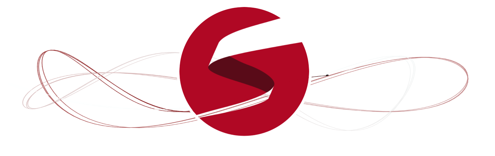
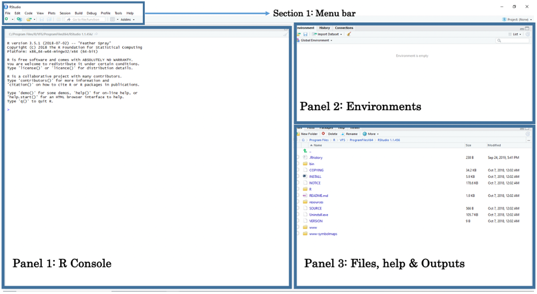

1 Getting started
1.1 What is Stan?
Stan is an interface for several statistical software packages (e.g., RStudio, Python, Julia, Stata, and MATLAB) which allows the user to perform state-of-the-art statistical modelling within a Bayesian framework. For R users, the package is called rstan which interfaces Stan and RStudio.
The focus will be solely on Stan and RStudio. We will show you how one can develop and compile Stan scripts for Bayesian inference through RStudio to perform basic parameter estimation, as well as a wide range of regression-based techniques starting with the simplest univariable linear models and its different families (logistic and Poisson) to the more advanced multivariable spatial risk models.
Before all that, let us install the appropriate software. The next section will guide you through the installation process.
1.2 Installation of R & RStudio
This section takes you through the installation process for R (Base) and RStudio on MAC and Windows.
If you are a MAC user, go to section 1.2.1
If you are a Windows user, jump to section 1.2.2
1.2.1 Installation process for MAC users
You will need to have the following software installed for the rstan package to work on MAC. It is recommended to have the latest version of R and RStudio
- R (version 4.4.2) and RStudio (version 2024.12.0+427)
- XQuartz (version 2.8.5)
- XCode (version 16.2)
- GNU Fortran (version 12.2)
If you already installed them, you can jump straight to the section 1.3 to install Stan.
[1] Installation of R (4.4.2) and RStudio (2024.12.0-427) on MAC:
For R (Base), please ensure you have installed the correct version for your MAC (Intel) or MAC (M1, M2/M3) OS.
| OS User type | R (Base) | RStudio Desktop |
|---|---|---|
| MAC (Intel) | R-4.4.2-x86_64.pkg | RStudio-2024.12.1-427.dmg |
| MAC (M1, M2 or M3) | R-4.4.2-arm64.pkg | RStudio-2024.12.1-427.dmg |
- Download the correct version of R (Base) for your system.
- Double-click on the downloaded file (i.e., R-4.4.2-x86_64.pkg or R-4.4.2-arm64.pkg) and follow the steps to complete the installation.
- Now, we can download the file (i.e.,
.dmg) for RStudio from the link provided in the above table. - Double-click the downloaded file (i.e., RStudio-2024.12.1-427.dmg) and then drag and drop the RStudio icon into the Applications folder to complete the installation.
[2] Installation of XQuartz (2.8.5):
Some functions in R (Base) and Stan require some of the libraries from XQuartz in order to function smoothly on your MAC OS.
- Download the latest version of XQuartz (XQuartz-2.8.5.pkg) by clicking on this LINK and simply complete the installation process by following the steps on your system.
[3] Installation of XCode (16.2):
Some functions in R (Base) and Stan require some of the external developer tools from the XCode application to function properly on your MAC OS.
- Go to the App Store application and get the XCode app downloaded by clicking on this LINK.
- Once it has downloaded, you can click on the “OPEN” button to verify it’s been downloaded. A window will prompt you to complete installation.
[4] GNU Fortran (version 12.2):
R (Base) and some packages require the GNU Fortran 12.2 compiler to execute smoothly on your MAC OS.
- Download the latest version of GNU Fortran 12.2 (gfortran-12.2-universal.pkg) by clicking on this LINK and simply complete the installation process by following the steps on your system.
This completes the installation process for R and RStudio on MAC.
1.2.2 Installation process for Windows users
You will need to have the following software installed for the rstan package to work on Windows.
- R (version 4.4.2)
- RTools44 (version 4.4.0)
- RStudio (version 2023.06.0-421)
If you have these installed already - you can jump to the section 1.3 on installing Stan.
[1] Installation of R (4.3.2) and RStudio (2023.06.0-421) on Windows:
| OS User type | R (Base) | RStudio Desktop |
|---|---|---|
| Windows | R-4.4.2-win.exe | RStudio-2024.12.0-427.exe |
- Download the file for R-4.4.2-win.exe attached in the table above.
- Double-click the downloaded file (i.e., R-4.4.2-win.exe) and follow the steps to complete the installation on your system.
- Now, we can download the file (i.e.,
.exe) for RStudio from the link provided in the above table. - Double-click the downloaded file (i.e., RStudio-2024.12.0-427.exe) and follow the steps from the installer to complete the installation.
[2] Installation of Rtools 4.4.0
For Windows users, after you have completed the installation for R (Base) and RStudio, you are required to install the RTools44 package as it contains some libraries and developer tools for R function properly.
- Download the latest version of RTools44 by clicking on this LINK to initiate the download of the Rtools42 installer.
- Double-click the downloaded rtools44-6335-6327.exe file and follow the steps to complete the installation.
This completes the installation process for R and RStudio on Windows.
1.3 Installation of rstan (or Stan)
When opening the RStudio application on your Windows or MAC PC. You will be greeted with its interface. The window is usual split into three panels: 1.) R Console, 2.) Environments and 3.) Files, Help, Outputs etc.,

The above section is the Menu Bar. You can access other functions for saving, editing, and opening a new R and Stan script files for writing and compiling codes. Let us opening a new R script by clicking on the File > New File > R Script. This should open a new script file titled “Untitled 1”.
Now we are going to latest version of rstan 2.36.0.9000. Using the install.packages() function, we can finally install this package. You can use the code chunk below:
install.packages("rstan", repos = c('https://stan-dev.r-universe.dev', getOption("repos")))After installation, use the following code chunk to test if its work:
example(stan_model, package = "rstan", run.dontrun = TRUE)You will first see some gibberish running through your console - don’t be alarmed - it means that its working. You will know rstan has been successfully installed, and working, when you see some iterations for four chains displayed in console. You will also see the objects fit, fit2, mod and stancode stored in the Environments panel when its done.
This completes the installation process for rstan.
1.4 Installation of other relevant R-packages needed in GEOG0125
sf: “Simply Features” package that allows the user to load shapefiles into RStudio’s memory.tmap: this package gives access to various functions for users to generate maps.stars: this package for handling spatiotemporal arrays, raster and vector data cubes.SpatialEpi: grants access to functionexpected()to calculated expected numbers.geostan: grants access to further functions that we need to compute the adjacency matrix that can be handled in Stan. We will use the two functionsshape2mat()andprep_icar_data()to create the adjacency matrix as nodes and edges.tidybayes: grants access to further functions for managing posterior estimates. We will need it calculating the exceedance probabilities. Load this alongsidetidyversepackage.loo: this package allows the user to perform model validation and comparison
install.packages("sf")
install.packages("tmap")
install.packages("SpatialEpi")
install.packages("geostan")
install.packages("loo")
install.packages("tidybayes")
install.packages("tidyverse")This concludes the installation section and sets you computer up for the course, if you encounter any problems please contact me.